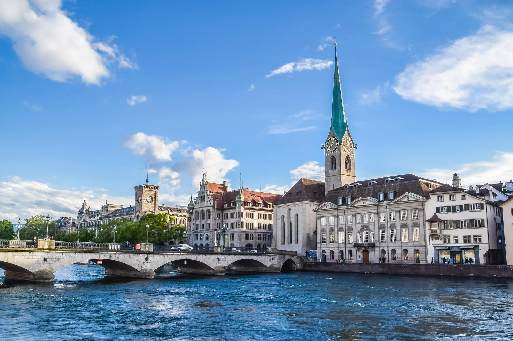
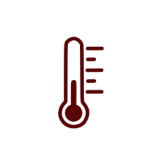
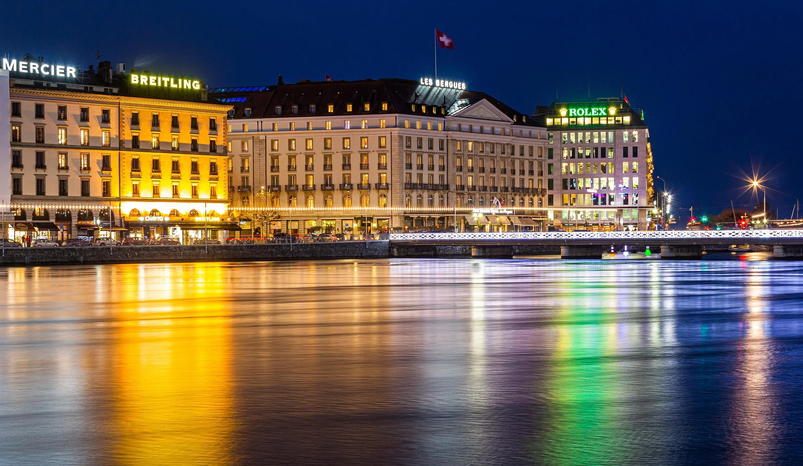
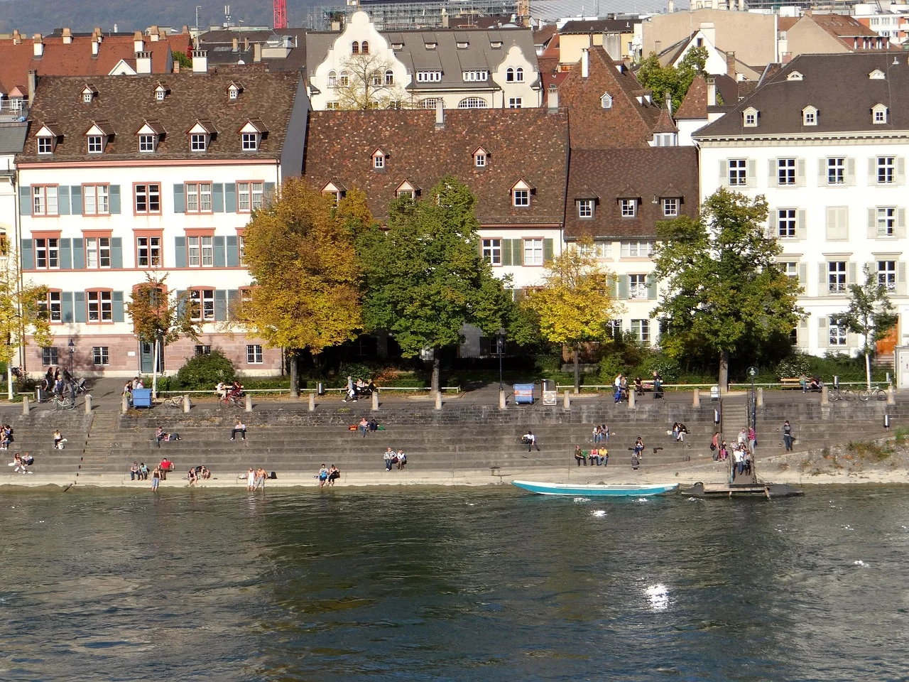
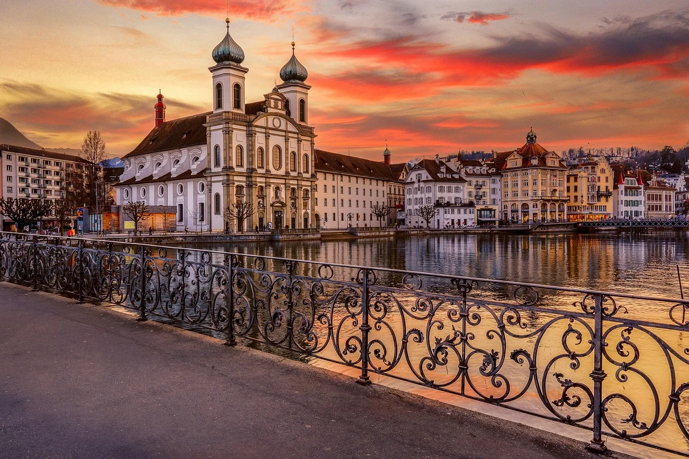
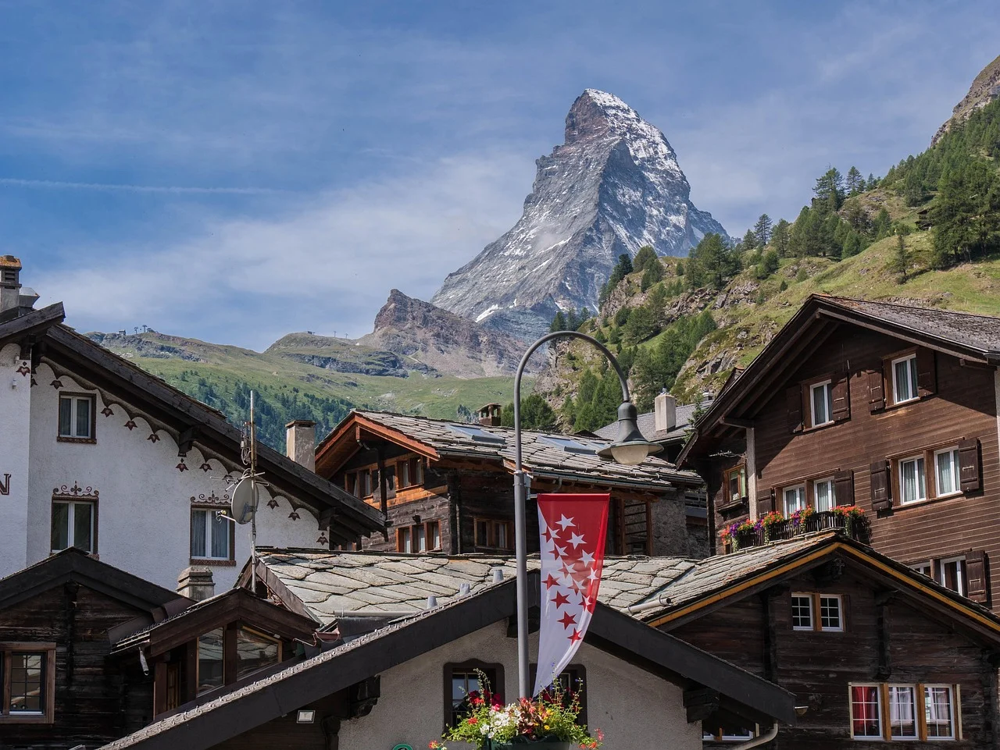
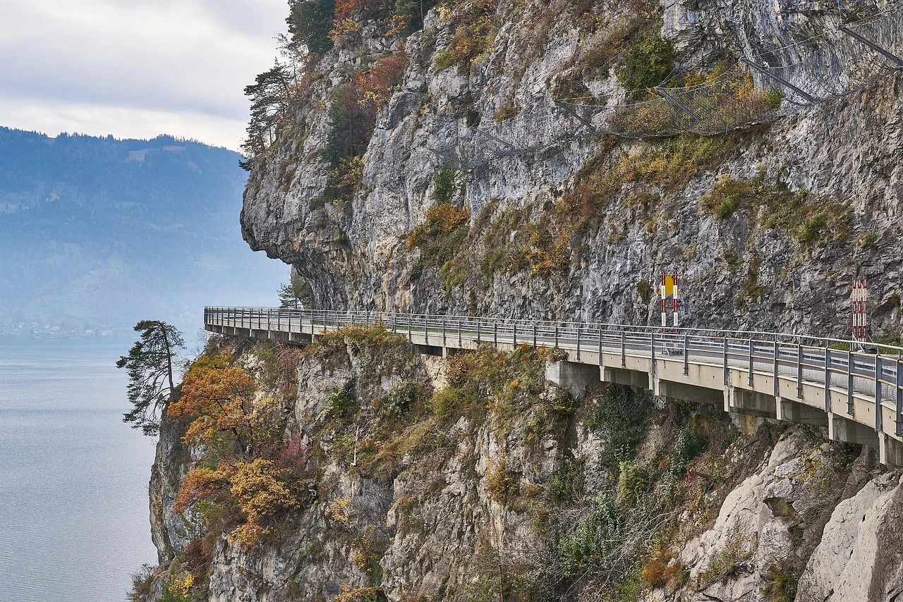

Ciudades Imperdibles
Suiza alberga algunas de las ciudades más bellas de Europa. Desde metrópolis vibrantes hasta pueblos alpinos tranquilos, cada destino ofrece una experiencia única que combina historia, cultura y paisajes de cuento de hados.

Zúrich
La ciudad más grande de Suiza
Zúrich es una vibrante metrópoli que combina perfectamente la historia medieval con la modernidad. Situada a orillas del lago de Zúrich y del río Limmat, la ciudad ofrece un casco antiguo encantador con calles empedradas, casas medievales y la impresionante Iglesia de San Pedro. Es el centro financiero y cultural del país, con museos de clase mundial, galerías de arte y una escena gastronómica excepcional.

Lugares destacados:

Ginebra
La ciudad internacional de la paz
Ginebra es una ciudad cosmopolita y elegante, hogar de la sede europea de las Naciones Unidas y numerosas organizaciones internacionales. Dominada por el icónico Jet d'Eau, una fuente de agua de 140 metros de altura, la ciudad ofrece un ambiente sofisticado con su lago espectacular, el hermoso parque de La Grange y el casco antiguo lleno de cafes y boutiques de lujo.
Lugares destacados:

Basilea
La capital cultural de Suiza
Basilea es una ciudad culturalmente rica situada en la triple frontera entre Suiza, Francia y Alemania. Conocida por su arquitectura histórica bien conservada, incluyendo el impresionante Münster (catedral) y el Ayuntamiento medieval rojo, Basilea es también un centro de arte contemporáneo de renombre mundial. La ciudad alberga más de 40 museos, incluyendo la Fundación Beyeler y el Museo de Arte, y celebra el famoso carnaval de Basilea, el más grande de Suiza.
Lugares destacados:

Lucerna
La ciudad medieval junto al lago de los Cuatro Cantones
Lucerna es una de las ciudades más pintorescas de Suiza, es famosa por su casco histórico conservado perfectamente y su impresionante entorno natural. Está situada junto al lago de los Cuatro Cantones y rodeada de montañas alpinas, combina arquitectura medieval, puentes de madera históricos y una atmósfera tranquila que la convierte en uno de los destinos más encantadores del país.
Lugares destacados:

Zermatt
El corazón alpino
Zermatt es un famoso destino de montaña ubicado al pie del icónico Matterhorn. Este encantador pueblo alpino es conocido por sus paisajes espectaculares, estaciones de esquí de clase mundial y su ambiente libre de automóviles. En invierno y verano, Zermatt atrae visitantes que buscan naturaleza, deportes de montaña y vistas inolvidables de los Alpes suizos.
Lugares destacados:

Interlaken
La entrada a los Alpes Suizos
Interlaken es un destino icónico para los amantes de la aventura y la naturaleza. Ubicada entre los lagos Thun y Brienz y rodeada por los Alpes berneses, esta ciudad es conocida por sus espectaculares vistas montañosas y su amplia oferta de actividades al aire libre como senderismo, parapente y excursiones alpinas.